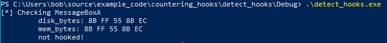
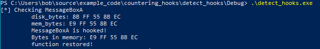

# Compare Bytes in Memory to Bytes on Disk
You could read the function's bytes in the DLL on disk and compare them to function's bytes in memory.
If the bytes are different, you can declare the function as hooked.
This has 2 problems:
• it relies on the DLL on disk being correct
◇ What if an attacker modifies your DLL to contain the hook bytes? This requires Admin privileges, but still
• Addresses in
mov,
cmp, etc. instructions can be different on disk vs memory
◇ e.g.
mov edx, 69EA219Ch on disk vs.
mov edx, 76A4219Ch in memory
◇ therefore you have to be careful with how many bytes you choose to compare
◇ e.g. compare the
mov edx byte -
BA - and not the address
Despite these issues, I think it's still an effective method.
## Code
Compiled as x86 Debug on Windows 10 x64 2004.
The code is well commented so it should hopefully explain itself.
#include <stdio.h>
#include <Windows.h>
#include <Psapi.h>
#include <shlwapi.h>
#pragma comment(lib, "Shlwapi.lib")
#define N_BYTES_TO_COMPARE 5 // you can run into problems if comparing more bytes (because mov/cmp addresses in disk vs. memory chanage)
LPVOID ReadFileIntoBuffer(char* file_name, OUT DWORD* file_buffer_size)
{
LPVOID file_buffer = NULL;
BOOL b_ret = TRUE;
HANDLE h_file = NULL;
DWORD file_size = 0;
// open target file
h_file = CreateFileA(file_name, GENERIC_READ, 0, NULL, OPEN_EXISTING, FILE_ATTRIBUTE_NORMAL, NULL);
if (h_file == INVALID_HANDLE_VALUE)
{
printf("[-] failed to open target file: %d \n", GetLastError());
goto cleanup;
}
// get file size
file_size = GetFileSize(h_file, NULL);
(*file_buffer_size) = file_size;
// create buffer to read file into
file_buffer = malloc(file_size);
// read file into buffer
b_ret = ReadFile(h_file, file_buffer, file_size, NULL, NULL);
if (b_ret == FALSE)
{
printf("[-] failed to read file into buffer: %d \n", GetLastError());
free(file_buffer);
goto cleanup;
}
cleanup:
if (h_file) CloseHandle(h_file);
return file_buffer;
}
/*
Convert VirtualAddress (address in memory) to raw address (address on disk).
Does so by finding which PE section your VirtualAddress is in,
subtracting the section's start address to find the relative virtual address,
and then adding the RVA to the start of the section on disk.
*/
DWORD va2raw(LPVOID file_buffer, DWORD va)
{
DWORD rva = 0;
DWORD raw_address = 0;
PIMAGE_DOS_HEADER dos_header = NULL;
PIMAGE_NT_HEADERS pe_header = NULL;
PIMAGE_SECTION_HEADER section_header = NULL;
// grab section header
dos_header = (PIMAGE_DOS_HEADER)file_buffer;
pe_header = (PIMAGE_NT_HEADERS)((DWORD_PTR)file_buffer + dos_header->e_lfanew);
section_header = IMAGE_FIRST_SECTION(pe_header);
if (va < section_header->PointerToRawData)
return va;
// loop through sections
for (int i = 0; i < pe_header->FileHeader.NumberOfSections; i++)
{
// find start and end of current section
DWORD section_start = section_header->VirtualAddress;
DWORD section_end = section_header->VirtualAddress + section_header->SizeOfRawData;
// if the provided RVA is within the bounds of this current section
if (va >= section_start && va < section_end)
{
// calculate raw address
rva = va - section_start;
raw_address = section_header->PointerToRawData + rva;
break;
}
// advance to next section
section_header += 1;
}
return raw_address;
}
/*
Loops through the export table and returns the raw address of the requested function.
*/
SIZE_T FindRawExportAddress(LPVOID file_buffer, char* target_function)
{
SIZE_T export_addr = 0;
PIMAGE_DOS_HEADER dos_header = NULL;
PIMAGE_NT_HEADERS pe_header = NULL;
PIMAGE_EXPORT_DIRECTORY export_directory = NULL;
DWORD* name_pointer_table = NULL;
WORD* ordinal_table = NULL;
DWORD* export_address_table = NULL;
char* exported_function_name = NULL;
DWORD exported_function_address = 0;
dos_header = (PIMAGE_DOS_HEADER)file_buffer;
pe_header = (PIMAGE_NT_HEADERS)((DWORD_PTR)dos_header + (DWORD_PTR)dos_header->e_lfanew);
export_directory = (PIMAGE_EXPORT_DIRECTORY)((DWORD_PTR)file_buffer + va2raw(file_buffer, pe_header->OptionalHeader.DataDirectory[IMAGE_DIRECTORY_ENTRY_EXPORT].VirtualAddress));
export_address_table = (DWORD*)((DWORD_PTR)file_buffer + va2raw(file_buffer, export_directory->AddressOfFunctions));
name_pointer_table = (DWORD*)((DWORD_PTR)file_buffer + va2raw(file_buffer, export_directory->AddressOfNames));
ordinal_table = (WORD*)((DWORD_PTR)file_buffer + va2raw(file_buffer, export_directory->AddressOfNameOrdinals));
// Loop through exports
for (DWORD i = 0; i < export_directory->NumberOfNames; i++)
{
// Grab function name & address
exported_function_name = (char*)((DWORD_PTR)file_buffer + va2raw(file_buffer, name_pointer_table[i]));
exported_function_address = export_address_table[ordinal_table[i]];
if (strcmp(exported_function_name, target_function) == 0)
{
export_addr = (SIZE_T)file_buffer + va2raw(file_buffer, exported_function_address);
break;
}
}
return export_addr;
}
/*
Compares the the function's bytes in memory with those in the DLL on disk.
If different, the function is hooked.
It DOES NOT check the function's hotpatch space.
Restores hooks by replacing the hook bytes with the original bytes from the DLL on disk.
Parameters:
- target_dll_name - Name of DLL in which function resides (User32.dll)
- function_name - the function to check (MessageBoxA)
- restore - set to TRUE to restore the original bytes
*/
BOOL IsFunctionHooked(char* target_dll_name, char* function_name, BOOL restore)
{
BOOL hooked = FALSE;
BOOL b_ret = FALSE;
BOOL dll_loaded = FALSE;
HMODULE loaded_dlls[64] = { 0 };
DWORD bytes_needed = 0;
unsigned int i = 0;
char loaded_dll_name[MAX_PATH] = { 0 };
char target_dll_path[MAX_PATH] = { 0 };
LPVOID func_addr_mem = NULL;
SIZE_T func_addr_raw = 0;
char disk_bytes[N_BYTES_TO_COMPARE] = { 0 }; // stores bytes @ function in DLL
char mem_bytes[N_BYTES_TO_COMPARE] = { 0 }; // stores bytes @ function that's currently in memory
LPVOID dll_buffer = NULL;
DWORD dll_buf_size = 0;
int differences = 0;
DWORD old_protect = 0;
printf("[*] Checking %s \n", function_name);
#ifdef _WIN64
sprintf_s(target_dll_path, MAX_PATH, "C:\\Windows\\System32\\%s", target_dll_name);
#else
sprintf_s(target_dll_path, MAX_PATH, "C:\\Windows\\SysWOW64\\%s", target_dll_name);
#endif
// Check if DLL is loaded into process. Grab address of target function if so
EnumProcessModules(GetCurrentProcess(), loaded_dlls, sizeof(loaded_dlls), &bytes_needed);
for (i = 0; i < (bytes_needed / sizeof(HMODULE)); i++)
{
GetModuleFileNameA(loaded_dlls[i], loaded_dll_name, MAX_PATH);
PathStripPathA(loaded_dll_name);
if (_stricmp(loaded_dll_name, target_dll_name) == 0)
{
dll_loaded = TRUE;
func_addr_mem = GetProcAddress(loaded_dlls[i], function_name);
break;
}
}
if (dll_loaded == FALSE)
{
printf("\t - function not present in binary \n");
hooked = FALSE;
goto cleanup;
}
// Read DLL from disk into buffer and find address of target function
dll_buffer = ReadFileIntoBuffer(target_dll_path, &dll_buf_size);
if (dll_buffer == NULL)
{
hooked = FALSE;
goto cleanup;
}
func_addr_raw = FindRawExportAddress(dll_buffer, function_name);
// Read first N bytes from function on disk (in DLL)
for (i = 0; i < N_BYTES_TO_COMPARE; i++)
memcpy_s((BYTE*)disk_bytes + i, 1, (BYTE*)func_addr_raw + i, 1);
printf("\t disk_bytes: ");
for (i = 0; i < N_BYTES_TO_COMPARE; i++)
printf("%02hhX ", disk_bytes[i]);
printf("\n");
// Read first N bytes from function in memory
for (i = 0; i < N_BYTES_TO_COMPARE; i++)
memcpy_s((BYTE*)mem_bytes + i, 1, (BYTE*)func_addr_mem + i, 1);
printf("\t mem_bytes: ");
for (i = 0; i < N_BYTES_TO_COMPARE; i++)
printf("%02hhX ", mem_bytes[i]);
printf("\n");
// Compare the two
differences = memcmp(disk_bytes, mem_bytes, N_BYTES_TO_COMPARE);
if (differences == 0)
printf("\t not hooked! \n");
else if (differences != 0)
{
hooked = TRUE;
printf("\t %s is hooked! \n", function_name);
printf("\t Bytes in memory: ");
for (i = 0; i < N_BYTES_TO_COMPARE; i++)
printf("%02hhX ", mem_bytes[i]);
printf("\n");
if (restore == TRUE)
{
// Make memory @ function writable, overwrite hook bytes with bytes from disk, and restore memory protection
b_ret = VirtualProtect(func_addr_mem, N_BYTES_TO_COMPARE, PAGE_EXECUTE_READWRITE, &old_protect);
if (b_ret == FALSE)
goto cleanup;
memcpy_s(func_addr_mem, N_BYTES_TO_COMPARE, (LPVOID)func_addr_raw, N_BYTES_TO_COMPARE); // this is non-atomic. could cause problems
VirtualProtect(func_addr_mem, N_BYTES_TO_COMPARE, old_protect, &old_protect);
// Verify that hook has been restored
differences = memcmp(func_addr_mem, (LPVOID)func_addr_raw, N_BYTES_TO_COMPARE);
if (differences == 0)
printf("\t function restored! \n");
else
printf("\t failed to restore function :/ \n");
}
}
cleanup:
if (dll_buffer) free(dll_buffer);
return hooked;
}
int main(void)
{
IsFunctionHooked("User32.dll", "MessageBoxA", TRUE);
MessageBoxA(NULL, "Hello world!", "!", MB_OK);
return 0;
}